feature/Inspection-Place-nav2Collected_smartfarm_v014 · 전 구간 통과 2026-09-26
PICK_HARVEST 성공(safe_to_navigate=true) 직후SUCCEEDED. Place 가 성립하는 위치·자세를 만들어 넘김smart_farm_navigation.standalone_app.py 에는 76줄 추가 · 기존 줄 삭제 0/feeder_dock/result 와 최종 world 좌표로만 판정.
눈으로 본 “잘 됐다” 는 판정에 쓰지 않음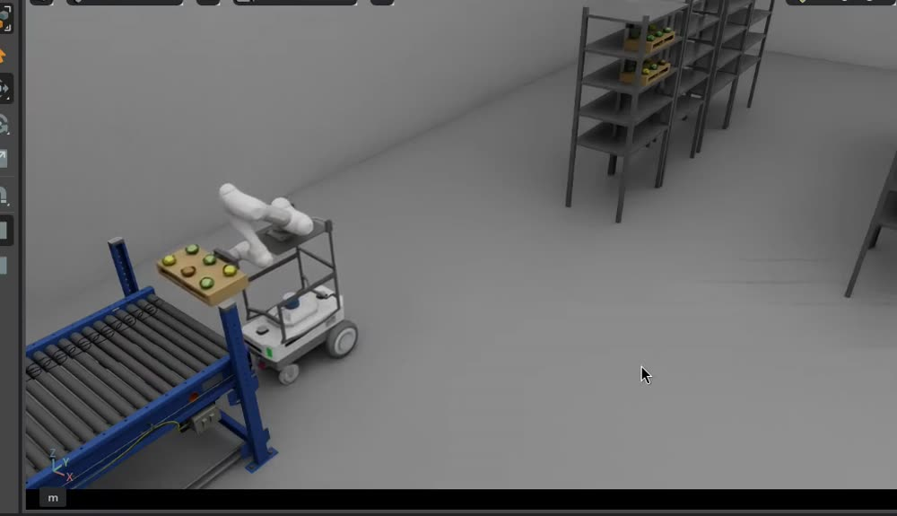
| 요구사항 | 정량 목표 | 근거 | 결과 |
|---|---|---|---|
| 통로를 접촉 없이 탈출 | 통로 내 제자리 회전 0회 | 회전 휩쓸림 0.66 m | 달성 · 경로에 후진 포함 |
| 적재물 유지 | 속도 ≤ 0.30 m/s | 팔레트 밀림 30 mm | 달성 |
| 도킹 거리 | 0.92 ± 0.03 m | 팔 관절 한계 20° | 0.937 m |
| 도킹 방향 | ±3° | 역기구학 성립 조건 | +1.08° |
| 도킹 좌우 | ±0.06 m | 동일 | 0.000 m |
| 실패 복구 | 재시도 2회 · 걸림 3초 내 중단 | 22·23차 실측 사례 | 달성 |
| 반복 성공률 | 회귀 10 · 격자 225 | 실측 기회 제한 | 10/10 · 224/225 |
results/ · bag 으로만 판단함
| 좌표계 | 정의 · 쓰이는 곳 |
|---|---|
| map = Isaac world | 지도 origin 이 world 기준이라 동일. 작업점 좌표와 결과 보고 |
| base_link | 카터 섀시, +x 가 앞. /cmd_vel 부호와 센서 변환 |
| odom | 시작 시 base_link 위치가 원점. 멈춤 판정(상대 이동량) |
| 도킹 기준계 | 지도를 쓰지 않음. 라이다가 검출한 면의 직선이 기준 |
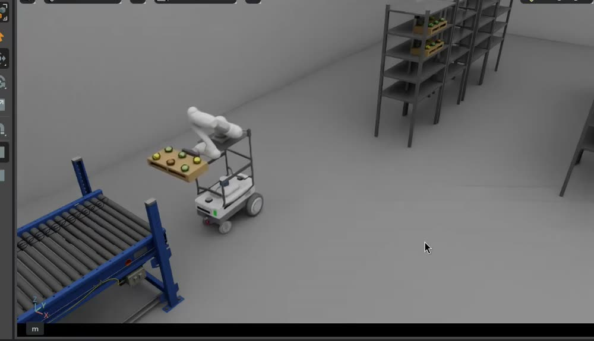
| 항목 | 값 | 이 값이어야 하는 이유 |
|---|---|---|
| 충돌 외형(footprint) | x 0.14 ~ −0.607 y ±0.25 (패딩 0.03) | 리프트·팔까지 덮은 실측 외형. 뒤끝 −0.607 이 도킹 거리 하한을 정함 |
| 최소 회전 반경 | 0.35 m | 통로에서 곡선 후진이 가능한 한계 |
| 3D 라이다 XT-32 | base_link (−0.232, 0, 0.526) | 도킹 · 점군 필터 · 연결 점검 세 노드가 공유. 한 곳만 바꾸면 어긋남 |
| 라이다 발행 | fullScan=True10 Hz · 약 41,000점 | 끄면 프레임마다 60° 조각(약 6,900점)만 와서 AMCL · 면 검출이 붕괴 |
| 2D 라이다 | 미사용 | 채널은 있으나 메시지가 발행되지 않음(실측 4회). 3D 변환만 사용 |
| 리프트 / 팔 | 0 m = 높이 0.796 m 운반 자세 0.243 m | HOME 관절 [180,0,0,0,0,0], 파지 후 joint_1 +90° |
| 팔 드라이브 | 강성 1e8 · 감쇠 1e4 | 잡지 않으면 팔이 처져 라이다에 장애물로 잡힘 → 출발 즉시 충돌 경고, 위치 0.5 m 오차 |
DifferentialController 가속 제한ROS_DOMAIN_IDRMW_IMPLEMENTATION=rmw_fastrtps_cpp 일치| 노드 | 역할 |
|---|---|
cloud_self_filter | 자기 반사 제거 + 0.25초 점군 합침 |
amcl | 지도 기준 위치 추정 |
planner_server | Smac Hybrid-A* 후진 포함 경로 |
controller_server | RPP 추종, /cmd_vel 생성 |
feeder_dock | 정밀 도킹. 상태기계와 ROS 배선 분리 |
navigation_node | 주행 지휘 · 도킹 시작 · 결과 변환 (팀 파일) |
station_markers | RViz2 작업점 표시 |
nav2_link_check | 기동 전 시계 · 좌표 · 센서 수신 점검 |
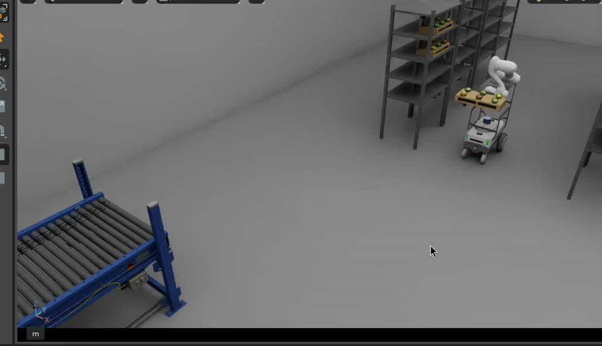
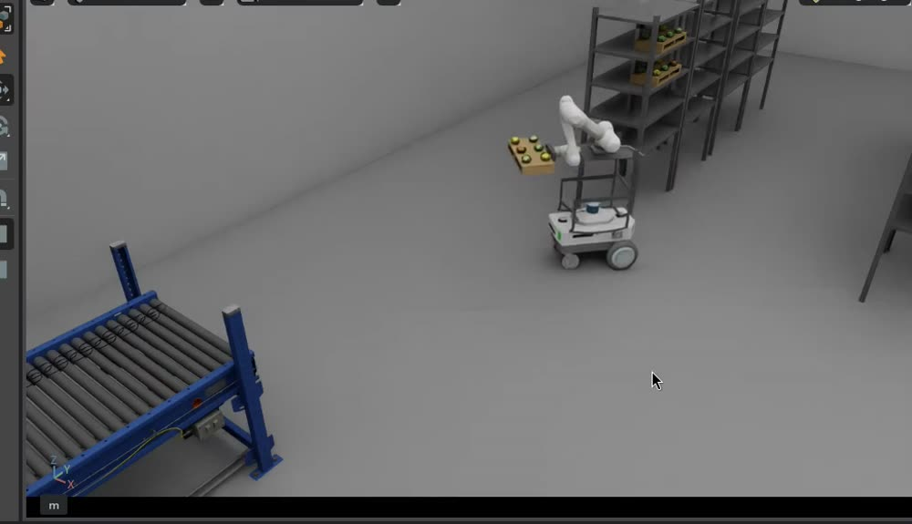
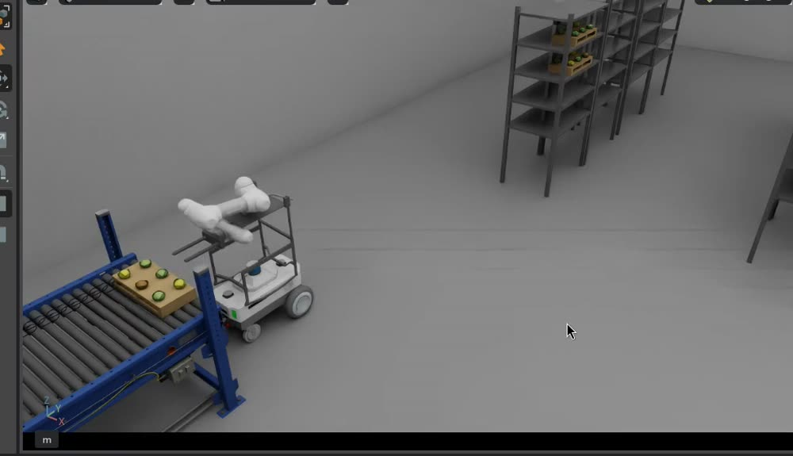
| 지점 | 반환 |
|---|---|
| 주행 실패 · 시간 초과 | NAV_FAILED |
| 도킹 실패 | FACE_NOT_FOUND · STALLED_* |
YAW_OFF_±N도 · TIMEOUT | |
| 차체 정지 확인 실패 | BASE_NOT_SETTLED팔을 움직이지 않고 끝냄 |
/scan 생성 파이프라인| 구성 요소 | 선택 | 왜 이것인가 |
|---|---|---|
| 전역 경로 계획기 | Smac Hybrid-A* Reeds-Shepp · 후진 확장 | 기본 계획기는 자세를 무시해 통로 안 제자리 회전 경로를 냄 → 랙 접촉 |
| 지역 추종기 | RPP · 후진 허용 0.30 m/s | 후진 구간을 그대로 추종. 대신 제자리 회전 불가 → 최종 방향은 도킹이 담당 |
| 진행 판정 | PoseProgressChecker | 기본 판정기는 회전을 진행으로 인정하지 않아 주기적으로 경로를 중단시킴 |
| 도착 허용 | 0.25 m / 0.5 rad | 0.15 m 로는 도착 직전 진동. 방향은 도킹이 보정 |
| 회전 가속 한계 | 20.0 | 2.0 이면 0.1 rad/s 로 기어감 → 2~3분 멈춘 듯 보이던 현상의 원인 |
| 속도 제한 | 선속 0.3 m/s · 각속 0.4 rad/s 가속 0.3 / 0.6 | 적재물 밀림 방지. 기준은 “팔레트 위치가 유지되는 선” |
| 위치 추정 | AMCL 주행 잡음 ↓ 레이저 신뢰 ↑ | Isaac odom 이 정확하므로 |
| 시간 기준 | use_sim_time: true | 전 노드 공통. Isaac 재실행 시 Nav2 도 재실행 |
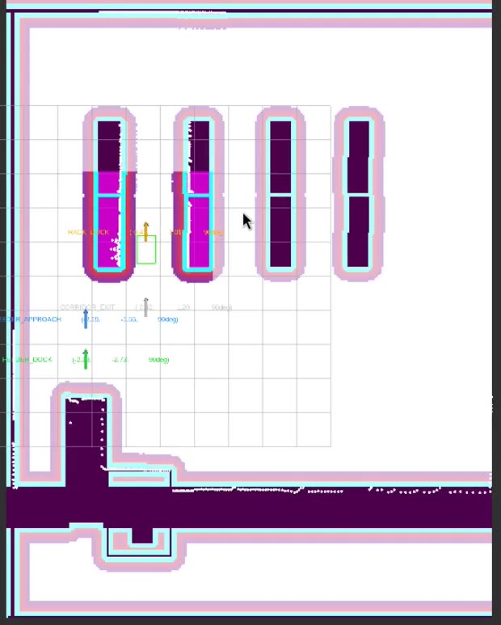
/scan(청록) · 작업점 마커 FEEDER_APPROACH / FEEDER_DOCK 가 함께 보임| 이름 | 타입 | 내용 |
|---|---|---|
/navigation/command | TaskCommand | NAVIGATION · destination=FEEDER_DOCK |
/navigation/result | TaskResult | status · phase · reached_station |
/navigation/status | ExecutorStatus | READY / BUSY / ERROR |
/feeder_dock/start | String | 실행 식별자 = command_id |
/feeder_dock/result | String JSON (래치) | run_id · status · face_dist_m · yaw_err_deg · lat_m |
NavigateToPose | Nav2 Action | map 기준 목표 자세 |
/cmd_vel | Twist | 발행자는 Nav2 와 feeder_dock 둘뿐 |
/scan · /tf · /clock | 표준 메시지 | 센서 · 변환 · 시뮬 시계 |
/sim_task/command 는 String JSON,
/navigation/command 는 TaskCommand 메시지임
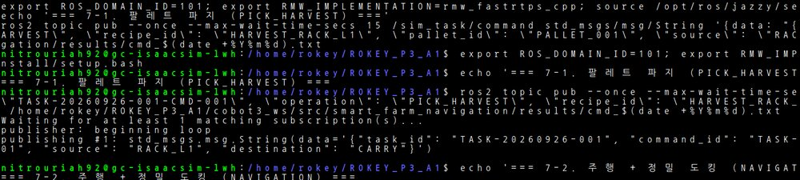
--once --max-wait-time-secs 15 로 나감command … 줄로 판단SETTLE 단계에서 Nav2 감속이 끝나고 차체가 실제로 멈출 때까지 기다림| 후퇴 거리 | 재시도 효과(모의) |
|---|---|
| 0.6 m | 시도마다 좌우 오차 15% 만 감소 → 0.07 m 잔존 |
| 0.90 m 채택 | 전 케이스가 0.06 m 안으로 수렴 |
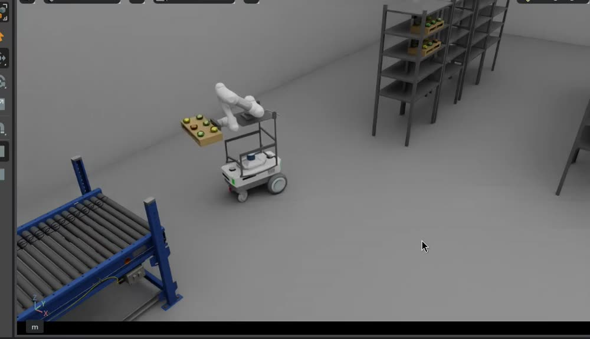
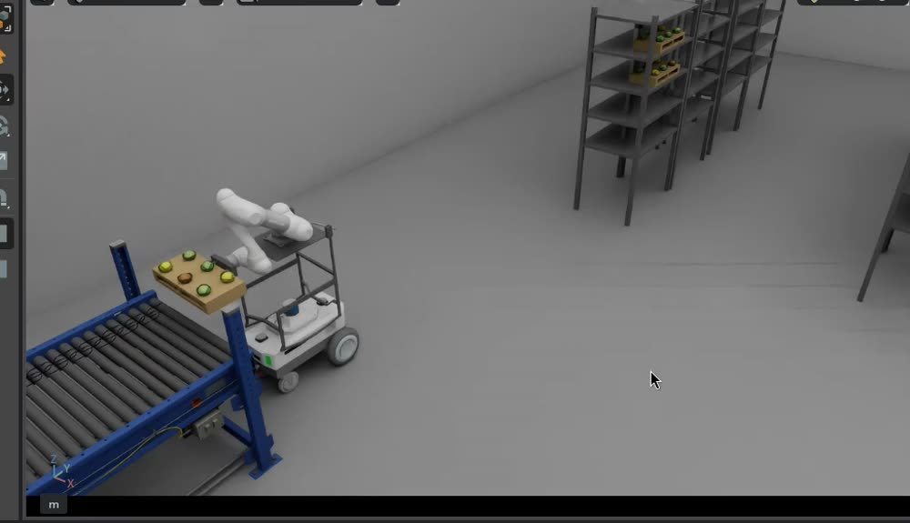
| 모션 | 폐기한 대안과 그 이유 |
|---|---|
| 진입 전 잠깐 멈춤 | 바로 도킹 시작 → Nav2 감속 명령과 /cmd_vel 이 겹치고, 돌고 있는 상태에서 잰 방향이 틀림. 2초 조용 + 차체 정지를 명시적으로 기다림 |
| 틀어지면 물러나 다시 | 도킹 지점 제자리 회전 → 팔레트가 컨베이어에 걸림(실측). 회전 금지가 규칙 |
| 속도 상한 0.3 m/s | 더 빠르게 → 팔레트가 30 mm 이상 밀려 Place 안전 검사에 걸림 |
| 파라미터 | 값 | 근거 |
|---|---|---|
standoff_m 도킹 거리 | 0.92 m | 팀이 Place 를 끝까지 돌려 확인. 0.85 에서는 관절 20.7°(한계 20°)로 실패. 단독 변경 금지 |
lat_tol_m 좌우 허용 | 0.06 m | 재시도 2회로 도달 가능한 한계. 팔 쪽 허용치 확정 시 재조정 |
square_tol_deg | 3.0° | 실측 도착 오차 1° 내외 → 여유 3배 |
reverse_speed_mps | 0.10 m/s | 0.15 에서 조향이 뒤늦게 들어와 정렬을 지나침 |
reverse_w_max | 0.12 rad/s | 0.20 을 5초 유지하다 반대쪽 +20.7° 로 넘어감 |
backoff_extra_m | 0.90 m | 0.6 m 는 재시도마다 15% 만 감소 |
| 측정 지연 / 감속률 | 0.5 s / 0.08 | 실측 bag 계측값. 차체가 바뀌면 다시 측정 |
fresh_s 면 신선도 | 2.5 s | 배율 0.33 에서 스캔 간격 0.9 s. 벽시계 기준으로는 6초 만에 오검출 실패 |
self_box_x[0] | −0.65 m | 차체 뒤끝 −0.607 은 덮고 대상 면은 남기는 경계 |
desired_linear_vel | 0.30 m/s | 적재물 유지 기준 |
max_angular_accel | 20.0 | 2.0 이면 회전이 0.1 rad/s 로 기어감 |
FEEDER_DOCK 좌표 | −2.19, −2.73 | 어림값. 실제 정지 위치는 standoff_m 이 정함 |
standoff_m ↔ self_box_x[0] ↔ FEEDER_DOCK 좌표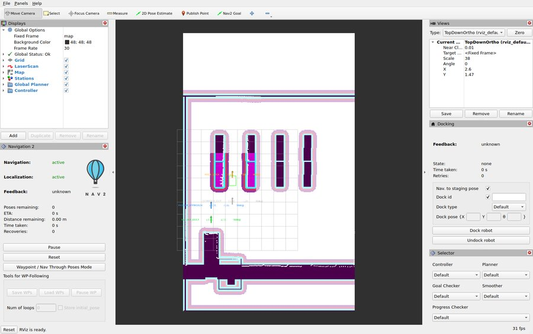
/scan · 경로 · 발자국 · 지역 costmap · 작업점 마커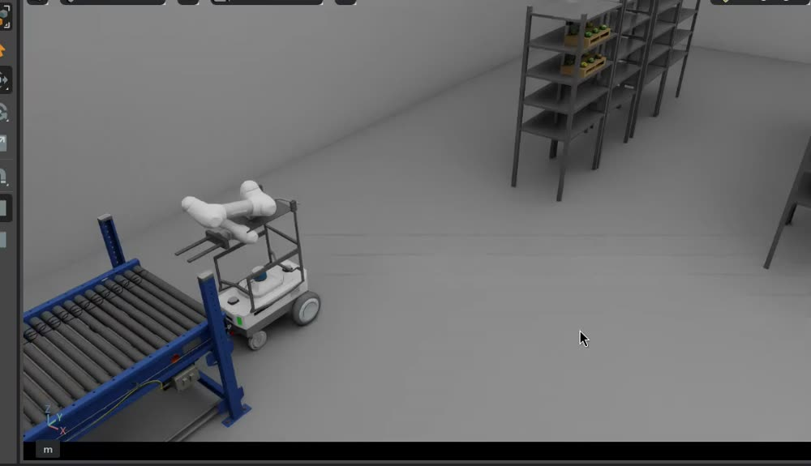
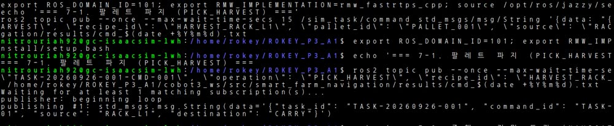
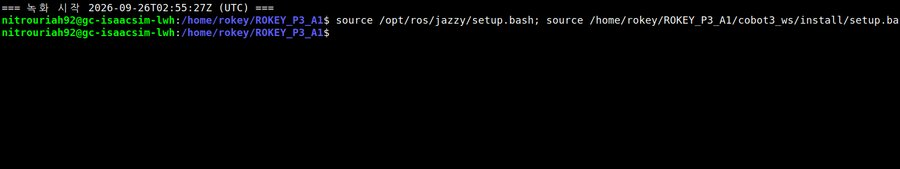
| 줄 | 읽는 법 |
|---|---|
| 도킹 대기 | idle: ... nav2 idle True, face NOT FOUND (...) — 왜 시작하지 않는지가 그대로 적힘 |
| 도킹 진행 | [REVERSE] ... face d=1.82 yaw=+5.2 lat=-0.15 — 단계 · 거리 · 방향 · 좌우 동시 확인 |
| 결과 | [DONE] {"status":"SUCCEEDED", ...} — 최종 판정은 이 줄과 world 좌표로만 |
idle: 줄과 /cmd_vel 값을 먼저 확인
0.1 rad/s 로 회전 중이던 사례, 면 미검출 대기였던 사례가 있었음| 회귀 10 시나리오 | 결과 |
|---|---|
| 정상 / 방향 +20° / −30° | 통과 |
| 좌 · 우 치우침 | 통과 (재시도 1회) |
| 접근 지점 0.4 m 뒤 | 통과 |
| 제자리 회전이 거의 안 되는 차체 | 통과 |
| 이상적 차체 | 통과 |
| 후진 중 끼임 | STALLED_REVERSE |
| 면이 안 보이는 위치 | FACE_NOT_FOUND |
/scan 을 노드와 같은 검출기에 다시 넣어
“센서 탓 / 제어 탓” 을 가름. 9월 23일 실패의 원인 규명이 이 도구로 이루어짐
| 시점 | 방향 오차 | 결과 |
|---|---|---|
| 2026-09-23 (이전 조향) | +20.7° | 실패 · 이어서 앱 종료 |
| 2026-09-26 (현재) | +1.08° | 성공 · 좌우 0.000 m |
| 도킹 거리 | 팔 ~ 놓을 자리 | Place |
|---|---|---|
| 0.85 m | 0.72 m | 실패 (관절 20.7° > 20°) |
| 0.92 m | 0.809 m | 성공 |
| # | 증상 (눈에 보인 것) | 원인 | 조치 |
|---|---|---|---|
| 1 | 로봇이 2~3분 멈춘 듯 서 있다가 출발 | 회전 가속 한계에 걸려 0.1 rad/s 로 회전. 진행 판정기가 회전을 진행으로 인정하지 않음 | 회전 가속 한계 20, 진행 판정기 교체 |
| 2 | 통로 안에서 제자리 회전 → 랙 접촉 | 기본 경로 계획기가 자세를 무시 | Hybrid-A*(Reeds-Shepp) + 후진 허용 추종 |
| 3 | 위치 추정이 흔들리고 도킹이 시작되지 않음 | 3D 라이다가 프레임마다 60° 조각만 발행(약 6,900점) | 장면에 fullScan + 최근 0.25초 점군 합침 |
| 4 | 출발 직후 충돌 경고, 위치 0.5 m 오차 | 팔 관절 드라이브를 잡지 않아 팔이 처져 라이다에 잡힘 | 관절 드라이브 고정 + 자기 반사 상자 조정 |
| 5 | 도킹 시작 6초 만에 FACE_NOT_FOUND | 신선도를 벽시계로 판단. 배율 0.33 에서 스캔 간격 0.9초 | 모든 시간 판단을 시뮬 시계로, 신선도 2.5초 |
| 6 | 후진 시작 0.6초 만에 “멈춤” 으로 실패 | 멈춤 판정이 위치만 봤음. 앞 단계인 회전 동안 타이머가 계속 흘렀음 | 회전도 이동으로 인정, 단계 전환 시 기준점 재설정 |
| 7 | 도킹 도착 방향이 +20.7° 틀어짐 | 목표점을 겨누는 조향 + 차체 응답 지연 | 도킹 선 추종으로 변경 + 관성 · 측정 지연 보정 |
| 8 | 도킹 지점 회전 중 걸려 30초간 명령만 나감 | 적재 팔레트가 구조물에 걸림. 자기 반사 제거로 라이다에도 안 보임 | 회전 금지 + 물러나 재시도 + 3초 끼임 감지 |
| 9 | 도킹 재시도 중 Isaac 전체가 종료 | 운반 중 팔레트 30 mm 밀림 예외가 앱 최상위까지 전달 | 예외를 받아 기록만 남기고 계속 진행. 안전 검사는 유지하고 다음 명령에서 결과로 정상 보고 |
| 10 | Place 실패 (관절 20.7°, 한계 20°) | 도킹 거리 0.85 에서 팔 ~ 놓을 자리가 0.72 m 로 너무 가까움 | 도킹 거리 0.92. 팀 Place 수정과 한 쌍으로 관리 |
| 항목 | 내용 · 다음 조치 |
|---|---|
| 교육장 실측 미실시 | 전 구간 통과는 임시 기기(GCP VM) 결과임. 교육장 PC 는 성능이 달라 같은 수치를 보장하지 못함 → 복귀 후 같은 절차로 재확인 |
| 좌우 오차 여유 부족 | 도킹 거리 0.92 에서 225 중 1건이 0.063 m(허용 0.06) → 팔 쪽 실제 허용치를 받아야 함 |
| 재시도의 시간 비용 | 최악 시뮬 75초. 근본 해결은 시뮬레이터 각가속 제한 완화(에셋 영역) |
| 2D 라이다 미사용 | 채널은 있으나 발행되지 않음(실측 4회). 3D 변환으로 대체 |
| 단일 로봇 | 다중 AMR 경로 조율은 범위 밖. 확장 시 Task Manager 쪽 설계가 먼저 |
| 장면 파일 누락 | 공유 zip 에 env_dressing.usd 미포함. 지도와 불일치는 없으나 확인 필요 |
INSPECT → CULL → CONVEYOR_OUT. 불량이 없으면 CULL 생략| # | 내용 |
|---|---|
| 1 | 다음 구간 연결 방식 — A안(팀 스테이션 자동 진행) / B안(Task Manager 지휘) |
| 2 | 팔 쪽 좌우 허용 오차 — 확정되면 도킹 허용치와 재시도 횟수를 그 기준으로 조정하겠음 |
| 3 | env_dressing.usd 누락 — 공유 zip 에서 제외된 것이 의도된 것인지 |
| 4 | 교육장 복귀 후 실측 일정 — 현재 결과는 임시 기기 기준 |
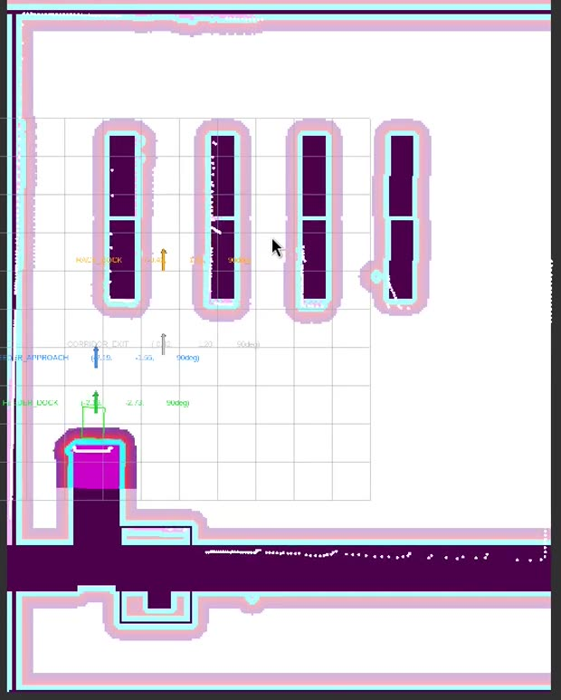
FEEDER_DOCK 마커 위에 정렬되어 있음